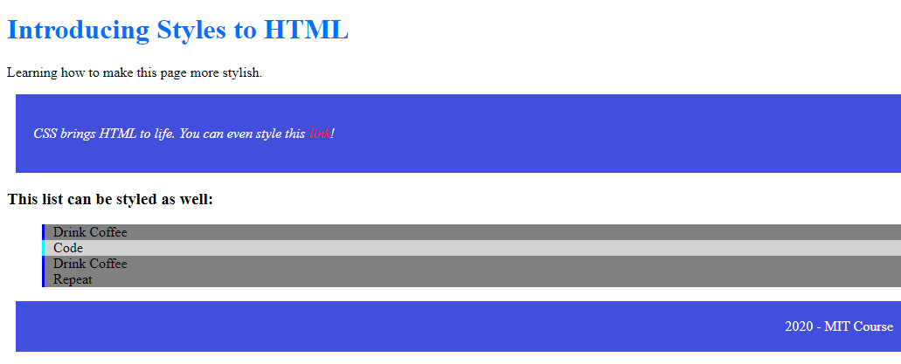
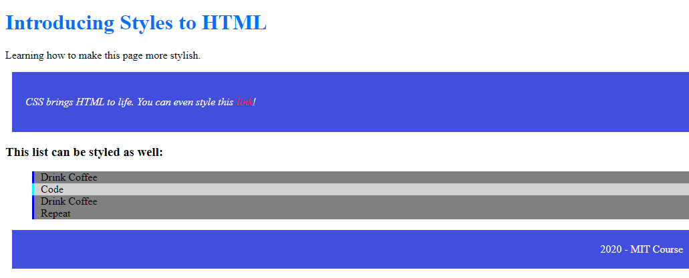

About Me
Bio:
My name is Andrew Stockton DeRuyck and I am 18 years old, I'm a practicing and aspiring video game designer, (preferably indie/solo, for several reasons,)
who has also learned programming to assist. (once again for many reasons.) I came here to learn even more programming, and ended up learning how to
make web browser programs, as well as learning more about how the web browser games I've played (and the code I've examined) work.
Here are some more Fun Facts about me: *I've applied for and been accepted to Fitchburg State University, as it is known for being good for game design.
*I have already spent lots and lots of time learning about coding and design, both in my own spare time and with several other IDTech classes (both in person and online)
*I was homeschooled from 8th grade onwards, first at a online public school called TECCA, then I just homeschooled later on, and eventually got a G.E.D. to graduate.
*I am diagonosed with ADHD, but I can focus on work fine with my perscriptions. I still can be slower, though, since I am a conscientious worker, partly so I can turn out better-quality (and better graded) work, although I can still submit passable work in time if I have a strict time limit.
In this portfolio, on top of being able to learn more about me and github, you will be able to see and try out (most of) my programs, using github and github pages.
But now that you know more about me, and speaking of github, as well as github pages, what are they? how do they work? watch this intro video, made by GitHub Training & Guides, to learn more:
Go to the "My Projects" Section to access my work and see both it and Github in action


 
